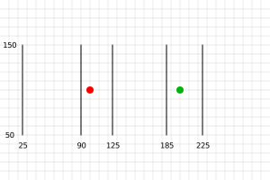

GPGPU означает “General Purpose” GPU и означает использование GPU для чего-то другого, кроме рисования пикселей.
Основное понимание для осознания GPGPU в WebGL заключается в том, что текстура
В JavaScript есть функция Array.prototype.map, которая для данного массива вызывает функцию для каждого элемента
function multBy2(v) {
return v * 2;
}
const src = [1, 2, 3, 4, 5, 6];
const dst = src.map(multBy2);
// dst теперь [2, 4, 6, 8, 10, 12];
Вы можете рассматривать multBy2 как шейдер, а map как аналогичный вызову gl.drawArrays или gl.drawElements.
Некоторые различия.
Мы можем симулировать это, создав собственную функцию map
function multBy2(v) {
return v * 2;
}
function mapSrcToDst(src, fn, dst) {
for (let i = 0; i < src.length; ++i) {
dst[i] = fn(src[i]);
}
}
const src = [1, 2, 3, 4, 5, 6];
const dst = new Array(6); // чтобы симулировать, что в WebGL мы должны выделить текстуру
mapSrcToDst(src, multBy2, dst);
// dst теперь [2, 4, 6, 8, 10, 12];
outЭто довольно легко симулировать
let outColor;
function multBy2(v) {
outColor = v * 2;
}
function mapSrcToDst(src, fn, dst) {
for (let i = 0; i < src.length; ++i) {
fn(src[i]);
dst[i] = outColor;
}
}
const src = [1, 2, 3, 4, 5, 6];
const dst = new Array(6); // чтобы симулировать, что в WebGL мы должны выделить текстуру
mapSrcToDst(src, multBy2, dst);
// dst теперь [2, 4, 6, 8, 10, 12];
Другими словами, они перебирают назначение и спрашивают “какое значение я должен положить сюда”
let outColor;
function multBy2(src) {
return function(i) {
outColor = src[i] * 2;
}
}
function mapDst(dst, fn) {
for (let i = 0; i < dst.length; ++i) {
fn(i);
dst[i] = outColor;
}
}
const src = [1, 2, 3, 4, 5, 6];
const dst = new Array(6); // чтобы симулировать, что в WebGL мы должны выделить текстуру
mapDst(dst, multBy2(src));
// dst теперь [2, 4, 6, 8, 10, 12];
gl_FragCoordlet outColor;
let gl_FragCoord;
function multBy2(src) {
return function() {
outColor = src[gl_FragCoord] * 2;
}
}
function mapDst(dst, fn) {
for (let i = 0; i < dst.length; ++i) {
gl_FragCoord = i;
fn();
dst[i] = outColor;
}
}
const src = [1, 2, 3, 4, 5, 6];
const dst = new Array(6); // чтобы симулировать, что в WebGL мы должны выделить текстуру
mapDst(dst, multBy2(src));
// dst теперь [2, 4, 6, 8, 10, 12];
Давайте предположим, что наш массив dst представляет текстуру 3x2
let outColor;
let gl_FragCoord;
function multBy2(src, across) {
return function() {
outColor = src[gl_FragCoord.y * across + gl_FragCoord.x] * 2;
}
}
function mapDst(dst, across, up, fn) {
for (let y = 0; y < up; ++y) {
for (let x = 0; x < across; ++x) {
gl_FragCoord = {x, y};
fn();
dst[y * across + x] = outColor;
}
}
}
const src = [1, 2, 3, 4, 5, 6];
const dst = new Array(6); // чтобы симулировать, что в WebGL мы должны выделить текстуру
mapDst(dst, 3, 2, multBy2(src, 3));
// dst теперь [2, 4, 6, 8, 10, 12];
И мы могли бы продолжать. Я надеюсь, что примеры выше помогают вам увидеть, что GPGPU в WebGL довольно прост концептуально. Давайте действительно сделаем вышесказанное в WebGL.
Для понимания следующего кода вам нужно будет, как минимум, прочитать статью об основах, вероятно, статью о Как это работает, статью о GLSL и статью о текстурах.
const vs = `#version 300 es
in vec4 position;
void main() {
gl_Position = position;
}
`;
const fs = `#version 300 es
precision highp float;
uniform sampler2D srcTex;
out vec4 outColor;
void main() {
ivec2 texelCoord = ivec2(gl_FragCoord.xy);
vec4 value = texelFetch(srcTex, texelCoord, 0); // 0 = mip level 0
outColor = value * 2.0;
}
`;
const dstWidth = 3;
const dstHeight = 2;
// создаем canvas 3x2 для 6 результатов
const canvas = document.createElement('canvas');
canvas.width = dstWidth;
canvas.height = dstHeight;
const gl = canvas.getContext('webgl2');
const program = webglUtils.createProgramFromSources(gl, [vs, fs]);
const positionLoc = gl.getAttribLocation(program, 'position');
const srcTexLoc = gl.getUniformLocation(program, 'srcTex');
// настраиваем полноэкранный quad в clip space
const buffer = gl.createBuffer();
gl.bindBuffer(gl.ARRAY_BUFFER, buffer);
gl.bufferData(gl.ARRAY_BUFFER, new Float32Array([
-1, -1,
1, -1,
-1, 1,
-1, 1,
1, -1,
1, 1,
]), gl.STATIC_DRAW);
// Создаем объект вершинного массива (состояние атрибутов)
const vao = gl.createVertexArray();
gl.bindVertexArray(vao);
// настраиваем наши атрибуты, чтобы сказать WebGL, как извлекать
// данные из буфера выше в атрибут position
gl.enableVertexAttribArray(positionLoc);
gl.vertexAttribPointer(
positionLoc,
2, // размер (количество компонентов)
gl.FLOAT, // тип данных в буфере
false, // нормализовать
0, // шаг (0 = авто)
0, // смещение
);
// создаем нашу исходную текстуру
const srcWidth = 3;
const srcHeight = 2;
const tex = gl.createTexture();
gl.bindTexture(gl.TEXTURE_2D, tex);
gl.pixelStorei(gl.UNPACK_ALIGNMENT, 1); // см. https://webglfundamentals.org/webgl/lessons/webgl-data-textures.html
gl.texImage2D(
gl.TEXTURE_2D,
0, // mip уровень
gl.R8, // внутренний формат
srcWidth,
srcHeight,
0, // граница
gl.RED, // формат
gl.UNSIGNED_BYTE, // тип
new Uint8Array([
1, 2, 3,
4, 5, 6,
]));
gl.texParameteri(gl.TEXTURE_2D, gl.TEXTURE_MIN_FILTER, gl.NEAREST);
gl.texParameteri(gl.TEXTURE_2D, gl.TEXTURE_MAG_FILTER, gl.NEAREST);
gl.texParameteri(gl.TEXTURE_2D, gl.TEXTURE_WRAP_S, gl.CLAMP_TO_EDGE);
gl.texParameteri(gl.TEXTURE_2D, gl.TEXTURE_WRAP_T, gl.CLAMP_TO_EDGE);
gl.useProgram(program);
gl.uniform1i(srcTexLoc, 0); // говорим шейдеру, что исходная текстура находится на texture unit 0
gl.drawArrays(gl.TRIANGLES, 0, 6); // рисуем 2 треугольника (6 вершин)
// получаем результат
const results = new Uint8Array(dstWidth * dstHeight * 4);
gl.readPixels(0, 0, dstWidth, dstHeight, gl.RGBA, gl.UNSIGNED_BYTE, results);
// выводим результаты
for (let i = 0; i < dstWidth * dstHeight; ++i) {
log(results[i * 4]);
}
и вот он работает
Некоторые замечания о коде выше.
Мы рисуем quad в clip space от -1 до +1.
Мы создаем вершины для quad от -1 до +1 из 2 треугольников. Это означает, что при правильной настройке viewport мы нарисуем все пиксели в назначении. Другими словами, мы попросим наш шейдер сгенерировать значение для каждого элемента в результирующем массиве. Этот массив в данном случае - это сам canvas.
texelFetch - это функция текстуры, которая ищет один texel из текстуры.
Она принимает 3 параметра. Сэмплер, координаты texel на основе целых чисел, и mip уровень.
gl_FragCoord - это vec2, нам нужно превратить его в ivec2, чтобы использовать с
texelFetch. Здесь нет дополнительной математики, пока исходная текстура и
текстура назначения имеют одинаковый размер, что в данном случае так и есть.
Наш шейдер записывает 4 значения на пиксель
В данном конкретном случае это влияет на то, как мы читаем вывод. Мы просим RGBA/UNSIGNED_BYTE
из readPixels потому что другие комбинации формата/типа не поддерживаются.
Поэтому нам нужно смотреть на каждое 4-е значение для нашего ответа.
Примечание: Было бы умно попытаться воспользоваться тем фактом, что WebGL делает 4 значения за раз для еще большей скорости.
Мы используем R8 как внутренний формат нашей текстуры.
Это означает, что только красный канал из текстуры имеет значение из наших данных.
И наши входные данные, и выходные данные (canvas) - это значения UNSIGNED_BYTE
Это означает, что мы можем передавать и получать обратно только целые значения от 0 до 255. Мы могли бы использовать разные форматы для ввода, предоставляя текстуру другого формата. Мы также могли бы попытаться рендерить в текстуру другого формата для большего диапазона выходных значений.
В примере выше src и dst имеют одинаковый размер. Давайте изменим это так, чтобы мы добавляли каждые 2 значения
из src, чтобы сделать dst. Другими словами, учитывая [1, 2, 3, 4, 5, 6] как ввод, мы хотим
[3, 7, 11] как вывод. И далее, давайте сохраним источник как данные 3x2
Основная формула для получения значения из 2D массива, как если бы это был 1D массив
y = floor(indexInto1DArray / widthOf2DArray);
x = indexInto1DArray % widthOf2Array;
Учитывая это, наш фрагментный шейдер должен измениться на это, чтобы добавить каждые 2 значения.
#version 300 es
precision highp float;
uniform sampler2D srcTex;
uniform ivec2 dstDimensions;
out vec4 outColor;
vec4 getValueFrom2DTextureAs1DArray(sampler2D tex, ivec2 dimensions, int index) {
int y = index / dimensions.x;
int x = index % dimensions.x;
return texelFetch(tex, ivec2(x, y), 0);
}
void main() {
// вычисляем 1D индекс в dst
ivec2 dstPixel = ivec2(gl_FragCoord.xy);
int dstIndex = dstPixel.y * dstDimensions.x + dstPixel.x;
ivec2 srcDimensions = textureSize(srcTex, 0); // размер mip 0
vec4 v1 = getValueFrom2DTextureAs1DArray(srcTex, srcDimensions, dstIndex * 2);
vec4 v2 = getValueFrom2DTextureAs1DArray(srcTex, srcDimensions, dstIndex * 2 + 1);
outColor = v1 + v2;
}
Функция getValueFrom2DTextureAs1DArray - это в основном наша функция доступа к массиву.
Это означает, что эти 2 строки
vec4 v1 = getValueFrom2DTextureAs1DArray(srcTex, srcDimensions, dstIndex * 2.0);
vec4 v2 = getValueFrom2DTextureAs1DArray(srcTex, srcDimensions, dstIndex * 2.0 + 1.0);
Эффективно означают это
vec4 v1 = srcTexAs1DArray[dstIndex * 2.0];
vec4 v2 = setTexAs1DArray[dstIndex * 2.0 + 1.0];
В нашем JavaScript нам нужно найти местоположение dstDimensions
const program = webglUtils.createProgramFromSources(gl, [vs, fs]);
const positionLoc = gl.getAttribLocation(program, 'position');
const srcTexLoc = gl.getUniformLocation(program, 'srcTex');
const dstDimensionsLoc = gl.getUniformLocation(program, 'dstDimensions');
и установить его
gl.useProgram(program);
gl.uniform1i(srcTexLoc, 0); // говорим шейдеру, что исходная текстура находится на texture unit 0
gl.uniform2f(dstDimensionsLoc, dstWidth, dstHeight);
и нам нужно изменить размер назначения (canvas)
const dstWidth = 3;
const dstHeight = 1;
и с этим у нас теперь есть результирующий массив, способный выполнять математику со случайным доступом в исходный массив
Если вы хотели бы использовать больше массивов как ввод, просто добавьте больше текстур, чтобы поместить больше данных в ту же текстуру.
“Transform Feedback” - это модное название для способности записывать вывод varyings в вершинном шейдере в один или несколько буферов.
Преимущество использования transform feedback в том, что вывод одномерный,
поэтому, вероятно, легче рассуждать об этом. Это даже ближе к map из JavaScript.
Давайте возьмем 2 массива значений и выведем их сумму, разность и произведение. Вот вершинный шейдер
#version 300 es
in float a;
in float b;
out float sum;
out float difference;
out float product;
void main() {
sum = a + b;
difference = a - b;
product = a * b;
}
и фрагментный шейдер просто достаточно для компиляции
#version 300 es
precision highp float;
void main() {
}
Чтобы использовать transform feedback, мы должны сказать WebGL, какие varyings мы хотим записать
и в каком порядке. Мы делаем это, вызывая gl.transformFeedbackVaryings перед
линковкой шейдерной программы. Из-за этого мы не будем использовать наш помощник
для компиляции шейдеров и линковки программы на этот раз, просто чтобы было ясно,
что мы должны сделать.
Итак, вот код для компиляции шейдера, аналогичный коду в самой первой статье.
function createShader(gl, type, src) {
const shader = gl.createShader(type);
gl.shaderSource(shader, src);
gl.compileShader(shader);
if (!gl.getShaderParameter(shader, gl.COMPILE_STATUS)) {
throw new Error(gl.getShaderInfoLog(shader));
}
return shader;
}
Мы будем использовать его для компиляции наших 2 шейдеров, а затем прикрепить их и вызвать
gl.transformFeedbackVaryings перед линковкой
const vShader = createShader(gl, gl.VERTEX_SHADER, vs);
const fShader = createShader(gl, gl.FRAGMENT_SHADER, fs);
const program = gl.createProgram();
gl.attachShader(program, vShader);
gl.attachShader(program, fShader);
gl.transformFeedbackVaryings(
program,
['sum', 'difference', 'product'],
gl.SEPARATE_ATTRIBS,
);
gl.linkProgram(program);
if (!gl.getProgramParameter(program, gl.LINK_STATUS)) {
throw new Error(gl.getProgramParameter(program));
}
gl.transformFeedbackVaryings принимает 3 аргумента. Программу, массив имен
varyings, которые мы хотим записать в том порядке, в котором вы хотите их записать.
Если бы у вас был фрагментный шейдер, который действительно что-то делал,
то, возможно, некоторые из ваших varyings предназначены только для фрагментного шейдера и поэтому
не нуждаются в записи. В нашем случае мы запишем все наши varyings, поэтому передаем
имена всех 3. Последний параметр может быть одним из 2 значений. Либо SEPARATE_ATTRIBS,
либо INTERLEAVED_ATTRIBS.
SEPARATE_ATTRIBS означает, что каждый varying будет записан в другой буфер.
INTERLEAVED_ATTRIBS означает, что все varyings будут записаны в тот же буфер,
но перемежаться в том порядке, который мы указали. В нашем случае, поскольку мы указали
['sum', 'difference', 'product'], если бы мы использовали INTERLEAVED_ATTRIBS, вывод
был бы sum0, difference0, product0, sum1, difference1, product1, sum2, difference2, product2, etc...
в один буфер. Мы используем SEPARATE_ATTRIBS, поэтому вместо этого
каждый вывод будет записан в другой буфер.
Итак, как и в других примерах, нам нужно настроить буферы для наших входных атрибутов
const aLoc = gl.getAttribLocation(program, 'a');
const bLoc = gl.getAttribLocation(program, 'b');
// Создаем объект вершинного массива (состояние атрибутов)
const vao = gl.createVertexArray();
gl.bindVertexArray(vao);
function makeBuffer(gl, sizeOrData) {
const buf = gl.createBuffer();
gl.bindBuffer(gl.ARRAY_BUFFER, buf);
gl.bufferData(gl.ARRAY_BUFFER, sizeOrData, gl.STATIC_DRAW);
return buf;
}
function makeBufferAndSetAttribute(gl, data, loc) {
const buf = makeBuffer(gl, data);
// настраиваем наши атрибуты, чтобы сказать WebGL, как извлекать
// данные из буфера выше в атрибут
gl.enableVertexAttribArray(loc);
gl.vertexAttribPointer(
loc,
1, // размер (количество компонентов)
gl.FLOAT, // тип данных в буфере
false, // нормализовать
0, // шаг (0 = авто)
0, // смещение
);
}
const a = [1, 2, 3, 4, 5, 6];
const b = [3, 6, 9, 12, 15, 18];
// помещаем данные в буферы
const aBuffer = makeBufferAndSetAttribute(gl, new Float32Array(a), aLoc);
const bBuffer = makeBufferAndSetAttribute(gl, new Float32Array(b), bLoc);
Затем нам нужно настроить “transform feedback”. “Transform feedback” - это объект, который содержит состояние буферов, в которые мы будем записывать. В то время как вершинный массив указывает состояние всех входных атрибутов, “transform feedback” содержит состояние всех выходных атрибутов.
Вот код для настройки нашего
// Создаем и заполняем transform feedback
const tf = gl.createTransformFeedback();
gl.bindTransformFeedback(gl.TRANSFORM_FEEDBACK, tf);
// создаем буферы для вывода
const sumBuffer = makeBuffer(gl, a.length * 4);
const differenceBuffer = makeBuffer(gl, a.length * 4);
const productBuffer = makeBuffer(gl, a.length * 4);
// привязываем буферы к transform feedback
gl.bindBufferBase(gl.TRANSFORM_FEEDBACK_BUFFER, 0, sumBuffer);
gl.bindBufferBase(gl.TRANSFORM_FEEDBACK_BUFFER, 1, differenceBuffer);
gl.bindBufferBase(gl.TRANSFORM_FEEDBACK_BUFFER, 2, productBuffer);
gl.bindTransformFeedback(gl.TRANSFORM_FEEDBACK, null);
// буферы, в которые мы записываем, не могут быть привязаны где-то еще
gl.bindBuffer(gl.ARRAY_BUFFER, null); // productBuffer все еще был привязан к ARRAY_BUFFER, поэтому отвязываем его
Мы вызываем bindBufferBase, чтобы установить, в какой буфер каждый из выходов, выход 0, выход 1 и выход 2
будет записывать. Выходы 0, 1, 2 соответствуют именам, которые мы передали в gl.transformFeedbackVaryings
когда мы линковали программу.
Когда мы закончили, “transform feedback”, который мы создали, имеет состояние, как это
Есть также функция bindBufferRange, которая позволяет нам указать поддиапазон в буфере, где
мы будем записывать, но мы не будем использовать это здесь.
Итак, чтобы выполнить шейдер, мы делаем это
gl.useProgram(program);
// привязываем наше состояние входных атрибутов для буферов a и b
gl.bindVertexArray(vao);
// нет необходимости вызывать фрагментный шейдер
gl.enable(gl.RASTERIZER_DISCARD);
gl.bindTransformFeedback(gl.TRANSFORM_FEEDBACK, tf);
gl.beginTransformFeedback(gl.POINTS);
gl.drawArrays(gl.POINTS, 0, a.length);
gl.endTransformFeedback();
gl.bindTransformFeedback(gl.TRANSFORM_FEEDBACK, null);
// включаем использование фрагментных шейдеров снова
gl.disable(gl.RASTERIZER_DISCARD);
Мы отключаем вызов фрагментного шейдера. Мы привязываем объект transform feedback, который мы создали ранее, мы включаем transform feedback, затем мы вызываем draw.
Чтобы посмотреть на значения, мы можем вызвать gl.getBufferSubData
log(`a: ${a}`);
log(`b: ${b}`);
printResults(gl, sumBuffer, 'sums');
printResults(gl, differenceBuffer, 'differences');
printResults(gl, productBuffer, 'products');
function printResults(gl, buffer, label) {
const results = new Float32Array(a.length);
gl.bindBuffer(gl.ARRAY_BUFFER, buffer);
gl.getBufferSubData(
gl.ARRAY_BUFFER,
0, // смещение в байтах в GPU буфере,
results,
);
// выводим результаты
log(`${label}: ${results}`);
}
Вы можете видеть, что это сработало. Мы заставили GPU вычислить сумму, разность и произведение значений ‘a’ и ‘b’, которые мы передали.
Примечание: Вы можете найти этот пример диаграммы состояния transform feedback полезным для визуализации того, что такое “transform feedback”. Это не тот же пример, что выше, хотя. Вершинный шейдер, который он использует с transform feedback, генерирует позиции и цвета для круга точек.
Допустим, у вас есть очень простая система частиц. Каждая частица просто имеет позицию и скорость, и если она выходит за один край экрана, она оборачивается вокруг другой стороны.
Учитывая большинство других статей на этом сайте, вы бы обновляли позиции частиц в JavaScript
for (const particle of particles) {
particle.pos.x = (particle.pos.x + particle.velocity.x) % canvas.width;
particle.pos.y = (particle.pos.y + particle.velocity.y) % canvas.height;
}
и затем рисовали бы частицы либо по одной за раз
useProgram (particleShader)
setup particle attributes
for each particle
set uniforms
draw particle
Или вы могли бы загрузить все новые позиции частиц
bindBuffer(..., particlePositionBuffer)
bufferData(..., latestParticlePositions, ...)
useProgram (particleShader)
setup particle attributes
set uniforms
draw particles
Используя пример transform feedback выше, мы могли бы создать буфер со скоростью для каждой частицы. Затем мы могли бы создать 2 буфера для позиций. Мы использовали бы transform feedback для добавления скорости к одному буферу позиций и записи в другой буфер позиций. Затем мы рисовали бы с новыми позициями. На следующем кадре мы читали бы из буфера с новыми позициями и записывали обратно в другой буфер для генерации еще более новых позиций.
Вот вершинный шейдер для обновления позиций частиц
#version 300 es
in vec2 oldPosition;
in vec2 velocity;
uniform float deltaTime;
uniform vec2 canvasDimensions;
out vec2 newPosition;
vec2 euclideanModulo(vec2 n, vec2 m) {
return mod(mod(n, m) + m, m);
}
void main() {
newPosition = euclideanModulo(
oldPosition + velocity * deltaTime,
canvasDimensions);
}
Чтобы рисовать частицы, мы просто используем простой вершинный шейдер
#version 300 es
in vec4 position;
uniform mat4 matrix;
void main() {
// делаем общую матричную математику
gl_Position = matrix * position;
gl_PointSize = 10.0;
}
Давайте превратим код для создания и линковки программы в функцию, которую мы можем использовать для обоих шейдеров
function createProgram(gl, shaderSources, transformFeedbackVaryings) {
const program = gl.createProgram();
[gl.VERTEX_SHADER, gl.FRAGMENT_SHADER].forEach((type, ndx) => {
const shader = createShader(gl, type, shaderSources[ndx]);
gl.attachShader(program, shader);
});
if (transformFeedbackVaryings) {
gl.transformFeedbackVaryings(
program,
transformFeedbackVaryings,
gl.SEPARATE_ATTRIBS,
);
}
gl.linkProgram(program);
if (!gl.getProgramParameter(program, gl.LINK_STATUS)) {
throw new Error(gl.getProgramParameter(program));
}
return program;
}
и затем использовать его для компиляции шейдеров, один с transform feedback varying.
const updatePositionProgram = createProgram(
gl, [updatePositionVS, updatePositionFS], ['newPosition']);
const drawParticlesProgram = createProgram(
gl, [drawParticlesVS, drawParticlesFS]);
Как обычно, нам нужно найти местоположения
const updatePositionPrgLocs = {
oldPosition: gl.getAttribLocation(updatePositionProgram, 'oldPosition'),
velocity: gl.getAttribLocation(updatePositionProgram, 'velocity'),
canvasDimensions: gl.getUniformLocation(updatePositionProgram, 'canvasDimensions'),
deltaTime: gl.getUniformLocation(updatePositionProgram, 'deltaTime'),
};
const drawParticlesProgLocs = {
position: gl.getAttribLocation(drawParticlesProgram, 'position'),
matrix: gl.getUniformLocation(drawParticlesProgram, 'matrix'),
};
Теперь давайте создадим некоторые случайные позиции и скорости
// создаем случайные позиции и скорости.
const rand = (min, max) => {
if (max === undefined) {
max = min;
min = 0;
}
return Math.random() * (max - min) + min;
};
const numParticles = 200;
const createPoints = (num, ranges) =>
new Array(num).fill(0).map(_ => ranges.map(range => rand(...range))).flat();
const positions = new Float32Array(createPoints(numParticles, [[canvas.width], [canvas.height]]));
const velocities = new Float32Array(createPoints(numParticles, [[-300, 300], [-300, 300]]));
Затем мы поместим их в буферы.
function makeBuffer(gl, sizeOrData, usage) {
const buf = gl.createBuffer();
gl.bindBuffer(gl.ARRAY_BUFFER, buf);
gl.bufferData(gl.ARRAY_BUFFER, sizeOrData, usage);
return buf;
}
const position1Buffer = makeBuffer(gl, positions, gl.DYNAMIC_DRAW);
const position2Buffer = makeBuffer(gl, positions, gl.DYNAMIC_DRAW);
const velocityBuffer = makeBuffer(gl, velocities, gl.STATIC_DRAW);
Обратите внимание, что мы передали gl.DYNAMIC_DRAW в gl.bufferData для 2 буферов позиций,
поскольку мы будем обновлять их часто. Это просто подсказка для WebGL для оптимизации.
Имеет ли это какой-либо эффект на производительность, зависит от WebGL.
Нам нужно 4 вершинных массива.
position1Buffer и velocity при обновлении позицийposition2Buffer и velocity при обновлении позицийposition1Buffer при рисованииposition2Buffer при рисованииfunction makeVertexArray(gl, bufLocPairs) {
const va = gl.createVertexArray();
gl.bindVertexArray(va);
for (const [buffer, loc] of bufLocPairs) {
gl.bindBuffer(gl.ARRAY_BUFFER, buffer);
gl.enableVertexAttribArray(loc);
gl.vertexAttribPointer(
loc, // местоположение атрибута
2, // количество элементов
gl.FLOAT, // тип данных
false, // нормализовать
0, // шаг (0 = авто)
0, // смещение
);
}
return va;
}
const updatePositionVA1 = makeVertexArray(gl, [
[position1Buffer, updatePositionPrgLocs.oldPosition],
[velocityBuffer, updatePositionPrgLocs.velocity],
]);
const updatePositionVA2 = makeVertexArray(gl, [
[position2Buffer, updatePositionPrgLocs.oldPosition],
[velocityBuffer, updatePositionPrgLocs.velocity],
]);
const drawVA1 = makeVertexArray(
gl, [[position1Buffer, drawParticlesProgLocs.position]]);
const drawVA2 = makeVertexArray(
gl, [[position2Buffer, drawParticlesProgLocs.position]]);
Затем мы создаем 2 объекта transform feedback.
position1Bufferposition2Bufferfunction makeTransformFeedback(gl, buffer) {
const tf = gl.createTransformFeedback();
gl.bindTransformFeedback(gl.TRANSFORM_FEEDBACK, tf);
gl.bindBufferBase(gl.TRANSFORM_FEEDBACK_BUFFER, 0, buffer);
return tf;
}
const tf1 = makeTransformFeedback(gl, position1Buffer);
const tf2 = makeTransformFeedback(gl, position2Buffer);
При использовании transform feedback важно отвязать буферы
от других точек привязки. ARRAY_BUFFER все еще имеет последний буфер
привязанным, в который мы поместили данные. TRANSFORM_FEEDBACK_BUFFER устанавливается при
вызове gl.bindBufferBase. Это немного запутанно. Вызов
gl.bindBufferBase с TRANSFORM_FEEDBACK_BUFFER фактически
привязывает буфер к 2 местам. Одно - к индексированной точке привязки внутри
объекта transform feedback. Другое - к своего рода глобальной
точке привязки, называемой TRANSFORM_FEEDBACK_BUFFER.
// отвязываем оставшиеся вещи
gl.bindBuffer(gl.ARRAY_BUFFER, null);
gl.bindBuffer(gl.TRANSFORM_FEEDBACK_BUFFER, null);
Чтобы мы могли легко менять местами буферы обновления и рисования, мы настроим эти 2 объекта
let current = {
updateVA: updatePositionVA1, // читаем из position1
tf: tf2, // записываем в position2
drawVA: drawVA2, // рисуем с position2
};
let next = {
updateVA: updatePositionVA2, // читаем из position2
tf: tf1, // записываем в position1
drawVA: drawVA1, // рисуем с position1
};
Затем мы сделаем цикл рендеринга, сначала мы обновим позиции используя transform feedback.
let then = 0;
function render(time) {
// конвертируем в секунды
time *= 0.001;
// Вычитаем предыдущее время из текущего времени
const deltaTime = time - then;
// Запоминаем текущее время для следующего кадра.
then = time;
webglUtils.resizeCanvasToDisplaySize(gl.canvas);
gl.clear(gl.COLOR_BUFFER_BIT);
// вычисляем новые позиции
gl.useProgram(updatePositionProgram);
gl.bindVertexArray(current.updateVA);
gl.uniform2f(updatePositionPrgLocs.canvasDimensions, gl.canvas.width, gl.canvas.height);
gl.uniform1f(updatePositionPrgLocs.deltaTime, deltaTime);
// отключаем использование фрагментного шейдера
gl.enable(gl.RASTERIZER_DISCARD);
gl.bindTransformFeedback(gl.TRANSFORM_FEEDBACK, current.tf);
gl.beginTransformFeedback(gl.POINTS);
gl.drawArrays(gl.POINTS, 0, numParticles);
gl.endTransformFeedback();
gl.bindTransformFeedback(gl.TRANSFORM_FEEDBACK, null);
// включаем использование фрагментных шейдеров снова
gl.disable(gl.RASTERIZER_DISCARD);
и затем рисуем частицы
// теперь рисуем частицы.
gl.useProgram(drawParticlesProgram);
gl.bindVertexArray(current.drawVA);
gl.viewport(0, 0, gl.canvas.width, gl.canvas.height);
gl.uniformMatrix4fv(
drawParticlesProgLocs.matrix,
false,
m4.orthographic(0, gl.canvas.width, 0, gl.canvas.height, -1, 1));
gl.drawArrays(gl.POINTS, 0, numParticles);
и наконец меняем местами current и next, чтобы на следующем кадре мы
использовали последние позиции для генерации новых
// меняем местами, из какого буфера мы будем читать
// и в какой мы будем записывать
{
const temp = current;
current = next;
next = temp;
}
requestAnimationFrame(render);
}
requestAnimationFrame(render);
И с этим у нас есть простые частицы на основе GPU.
Я не уверен, что это хороший пример, но это тот, который я написал. Я говорю, что он может быть нехорошим, потому что я подозреваю, что есть лучшие алгоритмы для поиска ближайшей линии к точке, чем перебор проверки каждой линии с точкой. Например, различные алгоритмы пространственного разделения могут позволить вам легко отбросить 95% точек и поэтому быть быстрее. Тем не менее, этот пример, вероятно, показывает некоторые техники GPGPU по крайней мере.
Проблема: У нас есть 500 точек и 1000 отрезков линий. Для каждой точки найти, какой отрезок линии к ней ближе всего. Метод перебора
for each point
minDistanceSoFar = MAX_VALUE
for each line segment
compute distance from point to line segment
if distance is < minDistanceSoFar
minDistanceSoFar = distance
closestLine = line segment
Для 500 точек, каждая проверяющая 1000 линий, это 500,000 проверок. Современные GPU имеют сотни или тысячи ядер, поэтому если мы могли бы сделать это на GPU, мы могли бы потенциально работать в сотни или тысячи раз быстрее.
На этот раз, хотя мы можем поместить точки в буфер, как мы делали для частиц, мы не можем поместить отрезки линий в буфер. Буферы предоставляют свои данные через атрибуты. Это означает, что мы не можем случайно обращаться к любому значению по требованию, вместо этого значения присваиваются атрибуту вне контроля шейдера.
Итак, нам нужно поместить позиции линий в текстуру, которая, как мы указали выше, является другим словом для 2D массива, хотя мы все еще можем обращаться с этим 2D массивом как с 1D массивом, если хотим.
Вот вершинный шейдер, который находит ближайшую линию для одной точки. Это точно алгоритм перебора, как выше
const closestLineVS = `#version 300 es
in vec3 point;
uniform sampler2D linesTex;
uniform int numLineSegments;
flat out int closestNdx;
vec4 getAs1D(sampler2D tex, ivec2 dimensions, int index) {
int y = index / dimensions.x;
int x = index % dimensions.x;
return texelFetch(tex, ivec2(x, y), 0);
}
// из https://stackoverflow.com/a/6853926/128511
// a - это точка, b,c - это отрезок линии
float distanceFromPointToLine(in vec3 a, in vec3 b, in vec3 c) {
vec3 ba = a - b;
vec3 bc = c - b;
float d = dot(ba, bc);
float len = length(bc);
float param = 0.0;
if (len != 0.0) {
param = clamp(d / (len * len), 0.0, 1.0);
}
vec3 r = b + bc * param;
return distance(a, r);
}
void main() {
ivec2 linesTexDimensions = textureSize(linesTex, 0);
// находим ближайший отрезок линии
float minDist = 10000000.0;
int minIndex = -1;
for (int i = 0; i < numLineSegments; ++i) {
vec3 lineStart = getAs1D(linesTex, linesTexDimensions, i * 2).xyz;
vec3 lineEnd = getAs1D(linesTex, linesTexDimensions, i * 2 + 1).xyz;
float dist = distanceFromPointToLine(point, lineStart, lineEnd);
if (dist < minDist) {
minDist = dist;
minIndex = i;
}
}
closestNdx = minIndex;
}
`;
Я переименовал getValueFrom2DTextureAs1DArray в getAs1D просто чтобы сделать
некоторые строки короче и более читаемыми.
В противном случае это довольно прямолинейная реализация алгоритма перебора,
который мы написали выше.
point - это текущая точка. linesTex содержит точки для
отрезка линии парами, первая точка, за которой следует вторая точка.
Сначала давайте создадим некоторые тестовые данные. Вот 2 точки и 5 линий. Они дополнены 0, 0, потому что каждая будет храниться в RGBA текстуре.
const points = [
100, 100,
200, 100,
];
const lines = [
25, 50,
25, 150,
90, 50,
90, 150,
125, 50,
125, 150,
185, 50,
185, 150,
225, 50,
225, 150,
];
const numPoints = points.length / 2;
const numLineSegments = lines.length / 2 / 2;
Если мы нанесем их на график, они будут выглядеть так
Линии пронумерованы от 0 до 4 слева направо, поэтому если наш код работает, первая точка (красная) должна получить значение 1 как ближайшая линия, вторая точка (зеленая), должна получить значение 3.
Давайте поместим точки в буфер, а также создадим буфер для хранения вычисленного ближайшего индекса для каждого
const closestNdxBuffer = makeBuffer(gl, points.length * 4, gl.STATIC_DRAW);
const pointsBuffer = makeBuffer(gl, new Float32Array(points), gl.DYNAMIC_DRAW);
и давайте создадим текстуру для хранения всех конечных точек линий.
function createDataTexture(gl, data, numComponents, internalFormat, format, type) {
const numElements = data.length / numComponents;
// вычисляем размер, который будет содержать все наши данные
const width = Math.ceil(Math.sqrt(numElements));
const height = Math.ceil(numElements / width);
const bin = new Float32Array(width * height * numComponents);
bin.set(data);
const tex = gl.createTexture();
gl.bindTexture(gl.TEXTURE_2D, tex);
gl.texImage2D(
gl.TEXTURE_2D,
0, // mip level
internalFormat,
width,
height,
0, // border
format,
type,
bin,
);
gl.texParameteri(gl.TEXTURE_2D, gl.TEXTURE_MIN_FILTER, gl.NEAREST);
gl.texParameteri(gl.TEXTURE_2D, gl.TEXTURE_MAG_FILTER, gl.NEAREST);
gl.texParameteri(gl.TEXTURE_2D, gl.TEXTURE_WRAP_S, gl.CLAMP_TO_EDGE);
gl.texParameteri(gl.TEXTURE_2D, gl.TEXTURE_WRAP_T, gl.CLAMP_TO_EDGE);
return {tex, dimensions: [width, height]};
}
const {tex: linesTex, dimensions: linesTexDimensions} =
createDataTexture(gl, lines, 2, gl.RG32F, gl.RG, gl.FLOAT);
В данном случае мы позволяем коду выбрать размеры текстуры и позволяем ему дополнить текстуру. Например, если мы дадим ему массив с 7 записями, он поместит это в текстуру 3x3. Он возвращает и текстуру, и размеры, которые он выбрал. Почему мы позволяем ему выбрать размер? Потому что текстуры имеют максимальный размер.
В идеале мы хотели бы просто смотреть на наши данные как на 1-мерный массив позиций, 1-мерный массив точек линий и т.д. Поэтому мы могли бы просто объявить текстуру как Nx1. К сожалению, GPU имеют максимальный размер, и это может быть всего 1024 или 2048. Если лимит был 1024 и нам нужно было 1025 значений в нашем массиве, нам пришлось бы поместить данные в текстуру, скажем, 512x2. Помещая данные в квадрат, мы не достигнем лимита, пока не достигнем максимального размера текстуры в квадрате. Для лимита размера 1024 это позволило бы массивы более 1 миллиона значений.
Далее компилируем шейдер и находим локации
const closestLinePrg = createProgram(
gl, [closestLineVS, closestLineFS], ['closestNdx']);
const closestLinePrgLocs = {
point: gl.getAttribLocation(closestLinePrg, 'point'),
linesTex: gl.getUniformLocation(closestLinePrg, 'linesTex'),
numLineSegments: gl.getUniformLocation(closestLinePrg, 'numLineSegments'),
};
И создаем вершинный массив
const closestLineVA = makeVertexArray(gl, [
[pointsBuffer, closestLinePrgLocs.point],
]);
И создаем transform feedback
const closestLineTF = makeTransformFeedback(gl, closestNdxBuffer);
Теперь мы можем запустить вычисление
gl.useProgram(closestLinePrg);
gl.bindVertexArray(closestLineVA);
gl.uniform1i(closestLinePrgLocs.linesTex, 0);
gl.uniform1f(closestLinePrgLocs.numLineSegments, numLineSegments);
gl.activeTexture(gl.TEXTURE0);
gl.bindTexture(gl.TEXTURE_2D, linesTex);
gl.enable(gl.RASTERIZER_DISCARD);
gl.bindTransformFeedback(gl.TRANSFORM_FEEDBACK, closestLineTF);
gl.beginTransformFeedback(gl.POINTS);
gl.drawArrays(gl.POINTS, 0, numPoints);
gl.endTransformFeedback();
gl.bindTransformFeedback(gl.TRANSFORM_FEEDBACK, null);
gl.disable(gl.RASTERIZER_DISCARD);
И читаем результаты
const results = new Int32Array(numPoints);
gl.bindBuffer(gl.ARRAY_BUFFER, closestNdxBuffer);
gl.getBufferSubData(gl.ARRAY_BUFFER, 0, results);
console.log('results:', results);
Результаты должны быть [1, 3], что означает, что точка 0 ближе всего к линии 1,
а точка 1 ближе всего к линии 3.
В предыдущем примере мы использовали transform feedback для записи результатов в буфер. Но что, если мы хотим использовать эти результаты в следующем кадре?
Вот пример, где мы используем transform feedback для создания анимации. Мы создаем частицы, которые движутся по кругу, и используем transform feedback для обновления их позиций каждый кадр.
const vs = `#version 300 es
in vec4 position;
in vec4 velocity;
in float age;
uniform float u_time;
uniform float u_deltaTime;
out vec4 v_position;
out vec4 v_velocity;
out float v_age;
void main() {
v_position = position;
v_velocity = velocity;
v_age = age;
}
`;
const fs = `#version 300 es
precision highp float;
in vec4 v_position;
in vec4 v_velocity;
in float v_age;
uniform float u_time;
uniform float u_deltaTime;
out vec4 outColor;
void main() {
// обновляем позицию
vec4 newPosition = v_position + v_velocity * u_deltaTime;
// обновляем скорость (добавляем небольшое ускорение)
vec4 newVelocity = v_velocity + vec4(0.0, -9.8, 0.0, 0.0) * u_deltaTime;
// увеличиваем возраст
float newAge = v_age + u_deltaTime;
// если частица слишком старая, сбрасываем её
if (newAge > 5.0) {
newPosition = vec4(0.0, 0.0, 0.0, 1.0);
newVelocity = vec4(
sin(u_time + gl_FragCoord.x * 0.01) * 100.0,
cos(u_time + gl_FragCoord.y * 0.01) * 100.0,
0.0, 0.0
);
newAge = 0.0;
}
outColor = vec4(newPosition.xyz, newAge);
}
`;
const numParticles = 1000;
const positions = new Float32Array(numParticles * 4);
const velocities = new Float32Array(numParticles * 4);
const ages = new Float32Array(numParticles);
// инициализируем частицы
for (let i = 0; i < numParticles; ++i) {
const angle = (i / numParticles) * Math.PI * 2;
const radius = 100 + Math.random() * 50;
positions[i * 4 + 0] = Math.cos(angle) * radius;
positions[i * 4 + 1] = Math.sin(angle) * radius;
positions[i * 4 + 2] = 0;
positions[i * 4 + 3] = 1;
velocities[i * 4 + 0] = Math.cos(angle) * 50;
velocities[i * 4 + 1] = Math.sin(angle) * 50;
velocities[i * 4 + 2] = 0;
velocities[i * 4 + 3] = 0;
ages[i] = Math.random() * 5;
}
const positionBuffer = makeBuffer(gl, positions, gl.DYNAMIC_DRAW);
const velocityBuffer = makeBuffer(gl, velocities, gl.DYNAMIC_DRAW);
const ageBuffer = makeBuffer(gl, ages, gl.DYNAMIC_DRAW);
const updateProgram = createProgram(gl, [vs, fs], ['v_position', 'v_velocity', 'v_age']);
const updateProgramLocs = {
position: gl.getAttribLocation(updateProgram, 'position'),
velocity: gl.getAttribLocation(updateProgram, 'velocity'),
age: gl.getAttribLocation(updateProgram, 'age'),
time: gl.getUniformLocation(updateProgram, 'u_time'),
deltaTime: gl.getUniformLocation(updateProgram, 'u_deltaTime'),
};
const updateVA = makeVertexArray(gl, [
[positionBuffer, updateProgramLocs.position],
[velocityBuffer, updateProgramLocs.velocity],
[ageBuffer, updateProgramLocs.age],
]);
const updateTF = makeTransformFeedback(gl, positionBuffer);
let then = 0;
function render(time) {
time *= 0.001;
const deltaTime = time - then;
then = time;
webglUtils.resizeCanvasToDisplaySize(gl.canvas);
gl.viewport(0, 0, gl.canvas.width, gl.canvas.height);
gl.clear(gl.COLOR_BUFFER_BIT);
// обновляем частицы
gl.useProgram(updateProgram);
gl.bindVertexArray(updateVA);
gl.uniform1f(updateProgramLocs.time, time);
gl.uniform1f(updateProgramLocs.deltaTime, deltaTime);
gl.enable(gl.RASTERIZER_DISCARD);
gl.bindTransformFeedback(gl.TRANSFORM_FEEDBACK, updateTF);
gl.beginTransformFeedback(gl.POINTS);
gl.drawArrays(gl.POINTS, 0, numParticles);
gl.endTransformFeedback();
gl.bindTransformFeedback(gl.TRANSFORM_FEEDBACK, null);
gl.disable(gl.RASTERIZER_DISCARD);
// рисуем частицы
gl.useProgram(drawProgram);
gl.bindVertexArray(drawVA);
gl.uniformMatrix4fv(
drawProgramLocs.matrix,
false,
m4.orthographic(-gl.canvas.width/2, gl.canvas.width/2,
-gl.canvas.height/2, gl.canvas.height/2, -1, 1));
gl.drawArrays(gl.POINTS, 0, numParticles);
requestAnimationFrame(render);
}
requestAnimationFrame(render);
В предыдущем примере мы вычислили, какая линия ближе всего к каждой точке, но мы только вывели результаты в консоль. Давайте создадим визуализацию, которая покажет точки, линии и соединит каждую точку с ближайшей к ней линией.
Сначала нам нужны шейдеры для рисования линий и точек:
const drawLinesVS = `#version 300 es
in vec4 position;
void main() {
gl_Position = position;
}
`;
const drawLinesFS = `#version 300 es
precision highp float;
out vec4 outColor;
void main() {
outColor = vec4(0.5, 0.5, 0.5, 1); // серый цвет для всех линий
}
`;
const drawClosestLinesVS = `#version 300 es
in int closestNdx;
uniform sampler2D linesTex;
uniform mat4 matrix;
uniform float numPoints;
out vec4 v_color;
vec3 hsv2rgb(vec3 c) {
vec4 K = vec4(1.0, 2.0 / 3.0, 1.0 / 3.0, 3.0);
vec3 p = abs(fract(c.xxx + K.xyz) * 6.0 - K.www);
return c.z * mix(K.xxx, clamp(p - K.xxx, 0.0, 1.0), c.y);
}
void main() {
// получаем координаты линии из текстуры
ivec2 texelCoord = ivec2(closestNdx, 0);
vec4 lineData = texelFetch(linesTex, texelCoord, 0);
// выбираем начальную или конечную точку линии
int linePointId = closestNdx * 2 + gl_VertexID % 2;
vec2 linePoint = mix(lineData.xy, lineData.zw, gl_VertexID % 2);
gl_Position = matrix * vec4(linePoint, 0, 1);
// вычисляем цвет на основе ID точки
float hue = float(gl_InstanceID) / numPoints;
v_color = vec4(hsv2rgb(vec3(hue, 1, 1)), 1);
}
`;
const drawClosestLinesPointsFS = `#version 300 es
precision highp float;
in vec4 v_color;
out vec4 outColor;
void main() {
outColor = v_color;
}
`;
const drawPointsVS = `#version 300 es
in vec2 point;
uniform mat4 matrix;
uniform float numPoints;
out vec4 v_color;
vec3 hsv2rgb(vec3 c) {
vec4 K = vec4(1.0, 2.0 / 3.0, 1.0 / 3.0, 3.0);
vec3 p = abs(fract(c.xxx + K.xyz) * 6.0 - K.www);
return c.z * mix(K.xxx, clamp(p - K.xxx, 0.0, 1.0), c.y);
}
void main() {
gl_Position = matrix * vec4(point, 0, 1);
gl_PointSize = 10.0;
// вычисляем цвет на основе ID точки
float hue = float(gl_VertexID) / numPoints;
v_color = vec4(hsv2rgb(vec3(hue, 1, 1)), 1);
}
`;
Мы передаем closestNdx как атрибут. Это результаты, которые мы сгенерировали.
Используя это, мы можем найти конкретную линию. Нам нужно нарисовать 2 точки на линию,
поэтому мы будем использовать инстансированное рисование
для рисования 2 точек на closestNdx. Затем мы можем использовать gl_VertexID % 2
для выбора начальной или конечной точки.
Наконец, мы вычисляем цвет, используя тот же метод, который мы использовали при рисовании точек, чтобы они соответствовали своим точкам.
Нам нужно скомпилировать все эти новые программы шейдеров и найти местоположения:
const closestLinePrg = createProgram(
gl, [closestLineVS, closestLineFS], ['closestNdx']);
const drawLinesPrg = createProgram(
gl, [drawLinesVS, drawLinesFS]);
const drawClosestLinesPrg = createProgram(
gl, [drawClosestLinesVS, drawClosestLinesPointsFS]);
const drawPointsPrg = createProgram(
gl, [drawPointsVS, drawClosestLinesPointsFS]);
const closestLinePrgLocs = {
point: gl.getAttribLocation(closestLinePrg, 'point'),
linesTex: gl.getUniformLocation(closestLinePrg, 'linesTex'),
numLineSegments: gl.getUniformLocation(closestLinePrg, 'numLineSegments'),
};
const drawLinesPrgLocs = {
linesTex: gl.getUniformLocation(drawLinesPrg, 'linesTex'),
matrix: gl.getUniformLocation(drawLinesPrg, 'matrix'),
};
const drawClosestLinesPrgLocs = {
closestNdx: gl.getAttribLocation(drawClosestLinesPrg, 'closestNdx'),
linesTex: gl.getUniformLocation(drawClosestLinesPrg, 'linesTex'),
matrix: gl.getUniformLocation(drawClosestLinesPrg, 'matrix'),
numPoints: gl.getUniformLocation(drawClosestLinesPrg, 'numPoints'),
};
const drawPointsPrgLocs = {
point: gl.getAttribLocation(drawPointsPrg, 'point'),
matrix: gl.getUniformLocation(drawPointsPrg, 'matrix'),
numPoints: gl.getUniformLocation(drawPointsPrg, 'numPoints'),
};
Нам нужны массивы вершин для рисования точек и ближайших линий:
const closestLinesVA = makeVertexArray(gl, [
[pointsBuffer, closestLinePrgLocs.point],
]);
const drawClosestLinesVA = gl.createVertexArray();
gl.bindVertexArray(drawClosestLinesVA);
gl.bindBuffer(gl.ARRAY_BUFFER, closestNdxBuffer);
gl.enableVertexAttribArray(drawClosestLinesPrgLocs.closestNdx);
gl.vertexAttribIPointer(drawClosestLinesPrgLocs.closestNdx, 1, gl.INT, 0, 0);
gl.vertexAttribDivisor(drawClosestLinesPrgLocs.closestNdx, 1);
const drawPointsVA = makeVertexArray(gl, [
[pointsBuffer, drawPointsPrgLocs.point],
]);
Итак, во время рендеринга мы вычисляем результаты, как мы делали раньше, но
мы не ищем результаты с помощью getBufferSubData. Вместо этого мы просто
передаем их в соответствующие шейдеры.
Сначала рисуем все линии серым цветом:
// рисуем все линии серым цветом
gl.bindFramebuffer(gl.FRAMEBUFFER, null);
gl.viewport(0, 0, gl.canvas.width, gl.canvas.height);
gl.bindVertexArray(null);
gl.useProgram(drawLinesPrg);
// привязываем текстуру линий к текстуре unit 0
gl.activeTexture(gl.TEXTURE0);
gl.bindTexture(gl.TEXTURE_2D, linesTex);
// Говорим шейдеру использовать текстуру на текстуре unit 0
gl.uniform1i(drawLinesPrgLocs.linesTex, 0);
gl.uniformMatrix4fv(drawLinesPrgLocs.matrix, false, matrix);
gl.drawArrays(gl.LINES, 0, numLineSegments * 2);
Затем рисуем все ближайшие линии:
gl.bindVertexArray(drawClosestLinesVA);
gl.useProgram(drawClosestLinesPrg);
gl.activeTexture(gl.TEXTURE0);
gl.bindTexture(gl.TEXTURE_2D, linesTex);
gl.uniform1i(drawClosestLinesPrgLocs.linesTex, 0);
gl.uniform1f(drawClosestLinesPrgLocs.numPoints, numPoints);
gl.uniformMatrix4fv(drawClosestLinesPrgLocs.matrix, false, matrix);
gl.drawArraysInstanced(gl.LINES, 0, 2, numPoints);
и наконец рисуем каждую точку:
gl.bindVertexArray(drawPointsVA);
gl.useProgram(drawPointsPrg);
gl.uniform1f(drawPointsPrgLocs.numPoints, numPoints);
gl.uniformMatrix4fv(drawPointsPrgLocs.matrix, false, matrix);
gl.drawArrays(gl.POINTS, 0, numPoints);
Прежде чем запустить, давайте сделаем еще одну вещь. Добавим больше точек и линий:
function createPoints(numPoints, ranges) {
const points = [];
for (let i = 0; i < numPoints; ++i) {
points.push(...ranges.map(range => r(...range)));
}
return points;
}
const r = (min, max) => min + Math.random() * (max - min);
const points = createPoints(8, [[0, gl.canvas.width], [0, gl.canvas.height]]);
const lines = createPoints(125 * 2, [[0, gl.canvas.width], [0, gl.canvas.height]]);
const numPoints = points.length / 2;
const numLineSegments = lines.length / 2 / 2;
и если мы запустим это:
Вы можете увеличить количество точек и линий, но в какой-то момент вы не сможете сказать, какие точки соответствуют каким линиям, но с меньшим числом вы можете хотя бы визуально проверить, что это работает.
Просто для удовольствия, давайте объединим пример с частицами и этот пример. Мы будем использовать техники, которые мы использовали для обновления позиций частиц, чтобы обновить точки. Для обновления конечных точек линий мы сделаем то, что мы делали в начале, и запишем результаты в текстуру.
Для этого мы копируем updatePositionFS вершинный шейдер
из примера с частицами. Для линий, поскольку их значения
хранятся в текстуре, нам нужно переместить их точки в
фрагментном шейдере:
const updateLinesVS = `#version 300 es
in vec4 position;
void main() {
gl_Position = position;
}
`;
const updateLinesFS = `#version 300 es
precision highp float;
uniform sampler2D linesTex;
uniform sampler2D velocityTex;
uniform vec2 canvasDimensions;
uniform float deltaTime;
out vec4 outColor;
vec2 euclideanModulo(vec2 n, vec2 m) {
return mod(mod(n, m) + m, m);
}
void main() {
// вычисляем координаты текселя из gl_FragCoord;
ivec2 texelCoord = ivec2(gl_FragCoord.xy);
// получаем данные линии
vec4 lineData = texelFetch(linesTex, texelCoord, 0);
// получаем скорость для этой линии
vec2 velocity = texelFetch(velocityTex, texelCoord, 0).xy;
// обновляем позиции
vec2 newStart = euclideanModulo(lineData.xy + velocity * deltaTime, canvasDimensions);
vec2 newEnd = euclideanModulo(lineData.zw + velocity * deltaTime, canvasDimensions);
outColor = vec4(newStart, newEnd);
}
`;
Теперь нам нужны буферы для хранения скоростей линий и программа для их обновления:
const lineVelocities = new Float32Array(numLineSegments * 2);
for (let i = 0; i < numLineSegments; ++i) {
lineVelocities[i * 2 + 0] = (Math.random() - 0.5) * 100;
lineVelocities[i * 2 + 1] = (Math.random() - 0.5) * 100;
}
const lineVelocityBuffer = makeBuffer(gl, lineVelocities, gl.DYNAMIC_DRAW);
const lineVelocityTex = makeDataTexture(gl, lineVelocities, numLineSegments, 1);
const updateLinesPrg = createProgram(gl, [updateLinesVS, updateLinesFS]);
const updateLinesPrgLocs = {
linesTex: gl.getUniformLocation(updateLinesPrg, 'linesTex'),
velocityTex: gl.getUniformLocation(updateLinesPrg, 'velocityTex'),
canvasDimensions: gl.getUniformLocation(updateLinesPrg, 'canvasDimensions'),
deltaTime: gl.getUniformLocation(updateLinesPrg, 'deltaTime'),
};
Теперь в нашем цикле рендеринга мы обновляем линии, затем точки, затем рисуем все:
function render(time) {
time *= 0.001;
const deltaTime = time - then;
then = time;
webglUtils.resizeCanvasToDisplaySize(gl.canvas);
gl.viewport(0, 0, gl.canvas.width, gl.canvas.height);
gl.clear(gl.COLOR_BUFFER_BIT);
// обновляем линии
gl.bindFramebuffer(gl.FRAMEBUFFER, linesFramebuffer);
gl.viewport(0, 0, numLineSegments, 1);
gl.useProgram(updateLinesPrg);
gl.bindVertexArray(null);
gl.activeTexture(gl.TEXTURE0);
gl.bindTexture(gl.TEXTURE_2D, linesTex);
gl.uniform1i(updateLinesPrgLocs.linesTex, 0);
gl.activeTexture(gl.TEXTURE1);
gl.bindTexture(gl.TEXTURE_2D, lineVelocityTex);
gl.uniform1i(updateLinesPrgLocs.velocityTex, 1);
gl.uniform2f(updateLinesPrgLocs.canvasDimensions, gl.canvas.width, gl.canvas.height);
gl.uniform1f(updateLinesPrgLocs.deltaTime, deltaTime);
gl.drawArrays(gl.TRIANGLES, 0, 6);
// обновляем точки
gl.bindFramebuffer(gl.FRAMEBUFFER, null);
gl.viewport(0, 0, gl.canvas.width, gl.canvas.height);
gl.useProgram(updateProgram);
gl.bindVertexArray(updateVA);
gl.uniform1f(updateProgramLocs.time, time);
gl.uniform1f(updateProgramLocs.deltaTime, deltaTime);
gl.enable(gl.RASTERIZER_DISCARD);
gl.bindTransformFeedback(gl.TRANSFORM_FEEDBACK, updateTF);
gl.beginTransformFeedback(gl.POINTS);
gl.drawArrays(gl.POINTS, 0, numPoints);
gl.endTransformFeedback();
gl.bindTransformFeedback(gl.TRANSFORM_FEEDBACK, null);
gl.disable(gl.RASTERIZER_DISCARD);
// вычисляем ближайшие линии
gl.bindFramebuffer(gl.FRAMEBUFFER, closestLineFramebuffer);
gl.viewport(0, 0, numPoints, 1);
gl.useProgram(closestLinePrg);
gl.bindVertexArray(closestLinesVA);
gl.uniform1i(closestLinePrgLocs.linesTex, 0);
gl.uniform1f(closestLinePrgLocs.numLineSegments, numLineSegments);
gl.enable(gl.RASTERIZER_DISCARD);
gl.bindTransformFeedback(gl.TRANSFORM_FEEDBACK, closestLineTF);
gl.beginTransformFeedback(gl.POINTS);
gl.drawArrays(gl.POINTS, 0, numPoints);
gl.endTransformFeedback();
gl.bindTransformFeedback(gl.TRANSFORM_FEEDBACK, null);
gl.disable(gl.RASTERIZER_DISCARD);
// рисуем все
gl.bindFramebuffer(gl.FRAMEBUFFER, null);
gl.viewport(0, 0, gl.canvas.width, gl.canvas.height);
// рисуем все линии серым цветом
gl.bindVertexArray(null);
gl.useProgram(drawLinesPrg);
gl.activeTexture(gl.TEXTURE0);
gl.bindTexture(gl.TEXTURE_2D, linesTex);
gl.uniform1i(drawLinesPrgLocs.linesTex, 0);
gl.uniformMatrix4fv(drawLinesPrgLocs.matrix, false, matrix);
gl.drawArrays(gl.LINES, 0, numLineSegments * 2);
// рисуем ближайшие линии
gl.bindVertexArray(drawClosestLinesVA);
gl.useProgram(drawClosestLinesPrg);
gl.activeTexture(gl.TEXTURE0);
gl.bindTexture(gl.TEXTURE_2D, linesTex);
gl.uniform1i(drawClosestLinesPrgLocs.linesTex, 0);
gl.uniform1f(drawClosestLinesPrgLocs.numPoints, numPoints);
gl.uniformMatrix4fv(drawClosestLinesPrgLocs.matrix, false, matrix);
gl.drawArraysInstanced(gl.LINES, 0, 2, numPoints);
// рисуем точки
gl.bindVertexArray(drawPointsVA);
gl.useProgram(drawPointsPrg);
gl.uniform1f(drawPointsPrgLocs.numPoints, numPoints);
gl.uniformMatrix4fv(drawPointsPrgLocs.matrix, false, matrix);
gl.drawArrays(gl.POINTS, 0, numPoints);
requestAnimationFrame(render);
}
requestAnimationFrame(render);
GPGPU в WebGL1 в основном ограничен использованием 2D массивов в качестве вывода (текстуры). WebGL2 добавляет возможность просто обрабатывать 1D массив произвольного размера через transform feedback.
Если вам интересно, посмотрите ту же статью для webgl1, чтобы увидеть, как все это было сделано, используя только возможность вывода в текстуры. Конечно, с небольшим размышлением это должно быть очевидно.
Версии WebGL2, использующие текстуры вместо transform feedback, также доступны,
поскольку использование texelFetch и наличие большего количества форматов текстур немного изменяет
их реализации.
Firefox начиная с версии 84 имеет ошибку в том,
что он неправильно требует наличия по крайней мере одного активного атрибута, который использует делитель 0 при вызове
drawArraysIndexed. Это означает, что пример выше, где мы рисуем ближайшие линии, используя
drawArraysIndexed, не работает.
Чтобы обойти это, мы можем создать буфер, который просто содержит [0, 1] в нем, и использовать его
на атрибуте для того, как мы использовали gl_VertexID % 2. Вместо этого мы будем использовать
in int endPoint; // нужно для firefox
...
-int linePointId = closestNdx * 2 + gl_VertexID % 2;
+int linePointId = closestNdx * 2 + endPoint;
...
GPU не имеют той же точности, что и CPU.
Проверьте ваши результаты и убедитесь, что они приемлемы.
Есть накладные расходы на GPGPU.
В первых нескольких примерах выше мы вычислили некоторые данные, используя WebGL, а затем прочитали результаты. Настройка буферов и текстур, установка атрибутов и uniform переменных занимает время. Достаточно времени, чтобы для чего-либо меньше определенного размера было бы лучше просто сделать это в JavaScript. Фактические примеры умножения 6 чисел или сложения 3 пар чисел слишком малы для того, чтобы GPGPU был полезен. Где находится эта граница не определено. Экспериментируйте, но просто догадка, что если вы не делаете по крайней мере 1000 или больше вещей, оставьте это в JavaScript.
readPixels и getBufferSubData медленные
Чтение результатов из WebGL медленное, поэтому важно избегать этого как можно больше. В качестве примера ни система частиц выше, ни пример динамических ближайших линий никогда не читают результаты обратно в JavaScript. Где можете, держите результаты на GPU как можно дольше. Другими словами, вы могли бы сделать что-то вроде
тогда как через творческие решения было бы намного быстрее, если бы вы могли
Наш пример динамических ближайших линий делал это. Результаты никогда не покидают GPU.
В качестве другого примера я однажды написал шейдер для вычисления гистограммы. Затем я прочитал результаты обратно в JavaScript, вычислил минимальные и максимальные значения, затем нарисовал изображение обратно на canvas, используя эти минимальные и максимальные значения как uniform переменные для автоматического выравнивания изображения.
Но оказалось, что вместо чтения гистограммы обратно в JavaScript я мог вместо этого запустить шейдер на самой гистограмме, который генерировал 2-пиксельную текстуру с минимальными и максимальными значениями в текстуре.
Я мог затем передать эту 2-пиксельную текстуру в 3-й шейдер, который мог читать для минимальных и максимальных значений. Нет необходимости читать их из GPU для установки uniform переменных.
Аналогично для отображения самой гистограммы я сначала читал данные гистограммы из GPU, но позже я вместо этого написал шейдер, который мог визуализировать данные гистограммы напрямую, убрав необходимость читать их обратно в JavaScript.
Делая это, весь процесс оставался на GPU и, вероятно, был намного быстрее.
GPU могут делать много вещей параллельно, но большинство не могут многозадачно так же, как CPU может. GPU обычно не могут делать “вытесняющую многозадачность”. Это означает, что если вы дадите им очень сложный шейдер, который, скажем, занимает 5 минут для выполнения, они потенциально заморозят всю вашу машину на 5 минут. Большинство хорошо сделанных ОС справляются с этим, заставляя CPU проверять, сколько времени прошло с тех пор, как они дали последнюю команду GPU. Если прошло слишком много времени (5-6 секунд) и GPU не ответил, то их единственный вариант - сбросить GPU.
Это одна из причин, почему WebGL может потерять контекст и вы получите сообщение “Aw, rats!” или подобное.
Легко дать GPU слишком много работы, но в графике это не так часто доводить до уровня 5-6 секунд. Обычно это больше похоже на уровень 0.1 секунды, что все еще плохо, но обычно вы хотите, чтобы графика работала быстро и поэтому программист, надеюсь, оптимизирует или найдет другую технику для поддержания отзывчивости их приложения.
GPGPU, с другой стороны, вы можете действительно захотеть дать GPU тяжелую задачу для выполнения. Здесь нет простого решения. Мобильный телефон имеет гораздо менее мощный GPU, чем топовый ПК. Помимо собственного тайминга, нет способа точно знать, сколько работы вы можете дать GPU, прежде чем это “слишком медленно”
У меня нет решения для предложения. Только предупреждение, что в зависимости от того, что вы пытаетесь сделать, вы можете столкнуться с этой проблемой.
Мобильные устройства обычно не поддерживают рендеринг в текстуры с плавающей точкой
Есть различные способы обойти эту проблему. Один из способов - вы можете
использовать функции GLSL floatBitsToInt, floatBitsToUint, IntBitsToFloat,
и UintBitsToFloat.
В качестве примера, версия на основе текстур примера с частицами
должна записывать в текстуры с плавающей точкой. Мы могли бы исправить это так, чтобы это не требовало их, объявив
нашу текстуру как тип RG32I (32-битные целочисленные текстуры), но все еще
загружать float значения.
В шейдере нам нужно будет читать текстуры как целые числа и декодировать их в float, а затем кодировать результат обратно в целые числа. Например:
#version 300 es
precision highp float;
-uniform highp sampler2D positionTex;
-uniform highp sampler2D velocityTex;
+uniform highp isampler2D positionTex;
+uniform highp isampler2D velocityTex;
uniform vec2 canvasDimensions;
uniform float deltaTime;
out ivec4 outColor;
vec2 euclideanModulo(vec2 n, vec2 m) {
return mod(mod(n, m) + m, m);
}
void main() {
// будет одна скорость на позицию
// поэтому текстура скорости и текстура позиции
// имеют одинаковый размер.
// кроме того, мы генерируем новые позиции
// поэтому мы знаем, что наше назначение того же размера
// что и наш источник
// вычисляем координаты текстуры из gl_FragCoord;
ivec2 texelCoord = ivec2(gl_FragCoord.xy);
- vec2 position = texelFetch(positionTex, texelCoord, 0).xy;
- vec2 velocity = texelFetch(velocityTex, texelCoord, 0).xy;
+ vec2 position = intBitsToFloat(texelFetch(positionTex, texelCoord, 0).xy);
+ vec2 velocity = intBitsToFloat(texelFetch(velocityTex, texelCoord, 0).xy);
vec2 newPosition = euclideanModulo(position + velocity * deltaTime, canvasDimensions);
- outColor = vec4(newPosition, 0, 1);
+ outColor = ivec4(floatBitsToInt(newPosition), 0, 1);
}
Я надеюсь, что эти примеры помогли вам понять ключевую идею GPGPU в WebGL
Шейдеры работают аналогично функциям map в том, что функция, которая вызывается
для каждого значения, не может решить, где будет храниться ее значение.
Скорее это решается извне функции. В случае WebGL
это решается тем, как вы настраиваете то, что рисуете. Как только вы вызываете gl.drawXXX
шейдер будет вызван для каждого нужного значения с вопросом “какое значение я должен
сделать этим?”
И это действительно все.
Поскольку мы создали некоторые частицы через GPGPU, есть это замечательное видео, которое во второй половине использует compute шейдеры для симуляции “слизи”.
Используя техники выше вот это переведено в WebGL2.